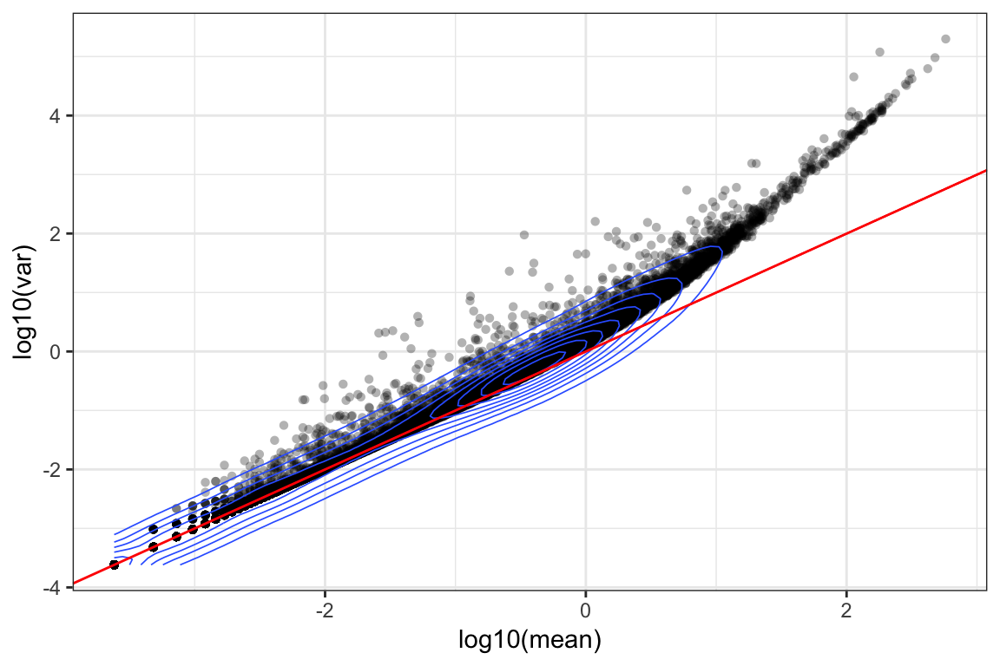
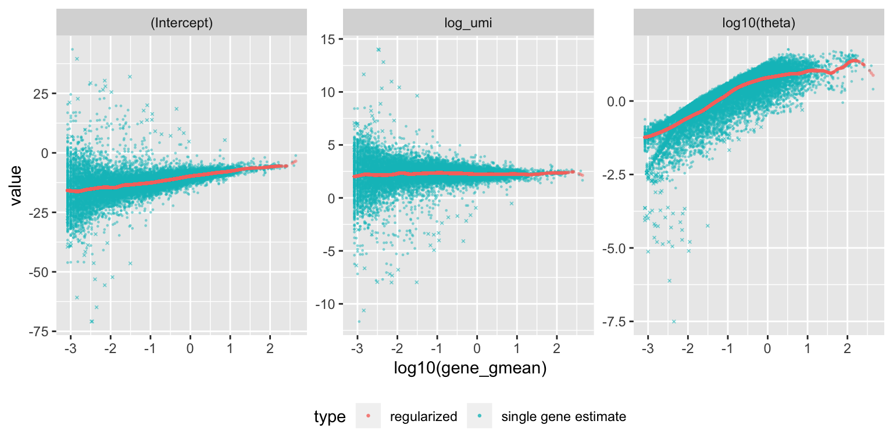
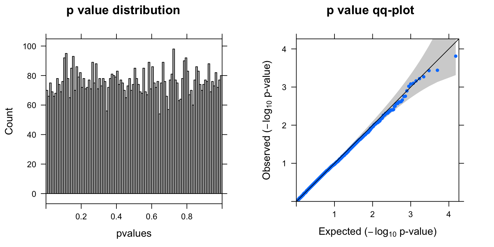
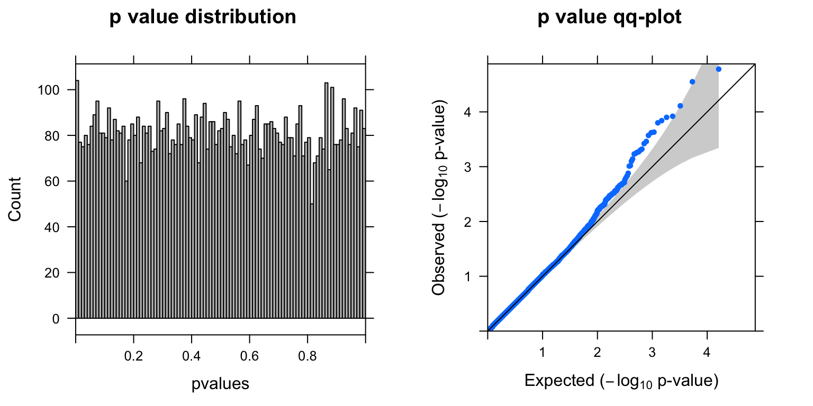
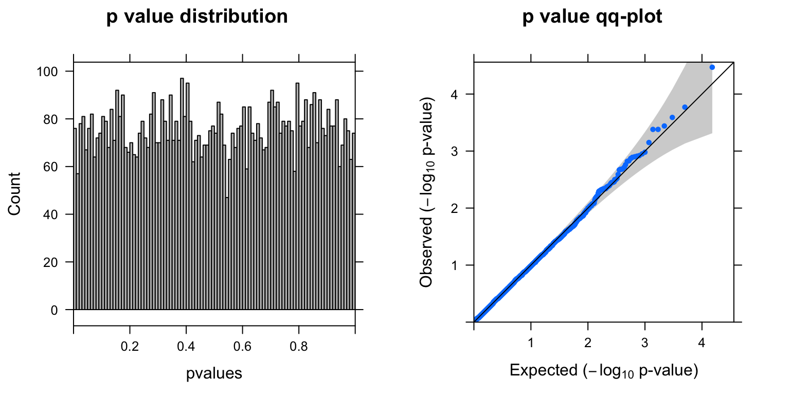
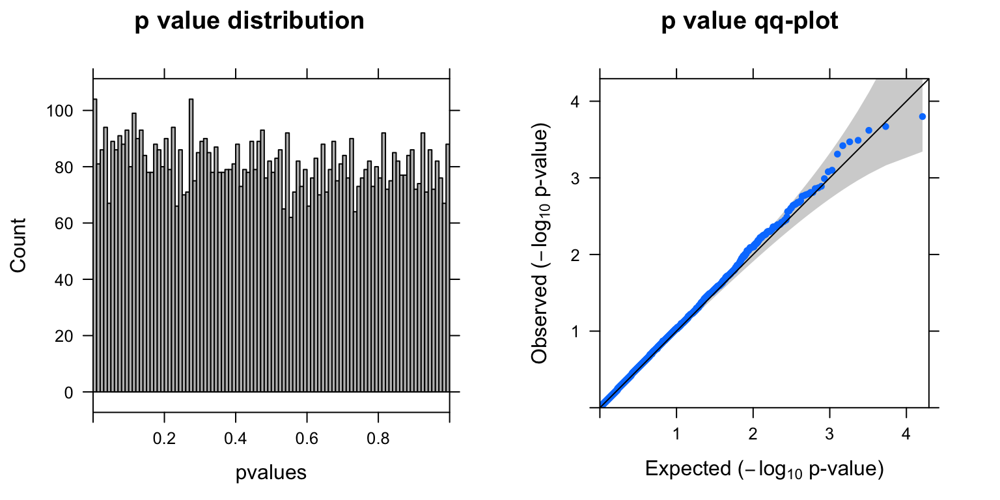
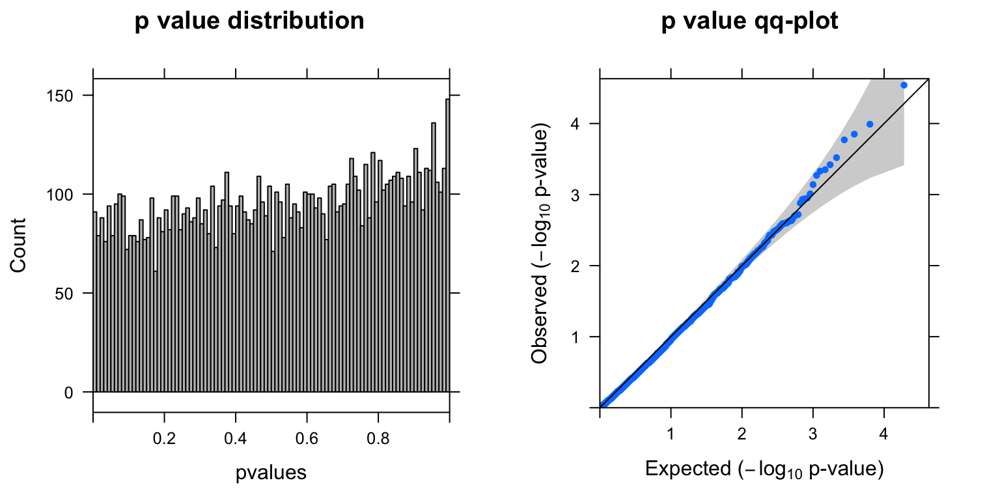

DE analysis on sctransformed CROP-seq data
Yifan Zhou
5/21/2019
Load data and functions
library(knitr)
library(kableExtra)
library(gridExtra)
library(Matrix)
library(sctransform)
library(ggplot2)
wd <- '~/Downloads/ASoC/singlecell/'
set.seed(1000)
## Necessary data
load(paste0(wd,'data/cropseq_expression.Rd'))
vst_out <- readRDS(paste0(wd,'data/sctransformed_object.rds'))
# Got 'vst_out' from:
# sctransform::vst(gene.exp,n_genes = NULL,return_gene_attr = TRUE, return_cell_attr = TRUE)
## Necessary functions
source(paste0(wd,'github/code/qq-plot.R'))
summ_pvalues <- function(pvalues){
library(gridExtra)
# p values distribution histogram
plot1 <- histogram(pvalues,col='grey',type="count",xlim=c(0,1),breaks=100, main= "p value distribution")
# pvalues qq-plot
plot2 <- qqunif.plot(pvalues, main="p value qq-plot")
grid.arrange(plot1,plot2, ncol=2)
}
ttest <- function(subset,tg.cells,neg.cells){
pval <- rep(NA,nrow(subset))
for (i in 1:nrow(subset)){
pval[i] = t.test(subset[i,neg.cells],
subset[i,tg.cells])$p.value
}
pval <- data.frame(gene=row.names(subset),pval=pval)
pval$adj <- p.adjust(pval$pval,method = 'fdr')
summ_pvalues(pval$pval)
cat(sum(pval$adj<0.1),'genes passed FDR=0.1 cutoff','\n')
tb <- head(pval[order(pval$pval),],10)
tb[,2:3] <- signif(tb[,2:3],digits = 2)
print(kable(tb,row.names = F) %>% kable_styling(position = 'center',full_width = T))
return(pval)
}sctransform on single-cell UMI data
Before sctransform
- Gene expression mean ~ variance relationship
orig_attr <- data.frame(mean = rowMeans(gene.exp),
detection_rate = rowMeans(gene.exp > 0),
var = apply(gene.exp, 1, var))
ggplot(orig_attr, aes(log10(mean), log10(var))) +
geom_point(alpha=0.3, shape=16) + geom_density_2d(size = 0.3) +
geom_abline(intercept = 0, slope = 1, color='red') + theme_bw()
For the genes, we can see that up to a mean UMI count of ~1, the mean-variance follows the 1:1 line, i.e. variance and mean are roughly equal (as expected under a Poisson model). However, genes with a higher average UMI count show overdispersion compared to Poisson.
- Mean ~ detection-rate relationship
# add the expected detection rate under Poisson model
x = seq(from = -3, to = 2, length.out = 1000)
poisson_model <- data.frame(log_mean = x, detection_rate = 1 - dpois(0, lambda = 10^x))
ggplot(orig_attr, aes(log10(mean), detection_rate)) + geom_point(alpha=0.3, shape=16) +
geom_line(data=poisson_model, aes(x=log_mean, y=detection_rate), color='red') +
theme_bw()
We see a lower than expected detection rate in the medium expression range. However, for the highly expressed genes, the rate is very close to 1.0, suggesting that there is no zero-inflation in the counts for those genes and that zero-inflation is a result of overdispersion, rather than an independent systematic bias.
After sctransform
sctransform models the expression of each gene as a negative binomial random variable with a mean that depends on other variables, such as the sequencing depth for each cell.
Each observed UMI count is transformed into a Pearson residual which can be interpreted as the number of standard deviations an observed count was away from the expected mean. If the model accurately describes the mean-variance relationship and the dependency of mean and latent factors, then the result should have mean zero and a stable variance across the range of expression.
The vst function was used to estimate model parameters and performs the variance stabilizing transformation. Here we use the default – log10 of the total UMI counts of a cell – as the latent variable for sequencing depth for each cell.
vst_out <- sctransform::vst(as.matrix(gene.exp),n_genes = NULL,return_gene_attr = TRUE, return_cell_attr = TRUE)sctransform_data <- vst_out$y
cat('Output dimension (Gene x Cell):',dim(sctransform_data))Output dimension (Gene x Cell): 17281 4144- The model parameters as a function of gene mean (geometric mean)
plot_model_pars(vst_out)
Internally vst performs Poisson regression per gene with \(log(\mu)=\beta_0+\beta_1 x\), where \(x\) is log10(umi), and \(\mu\) is the expected number of UMI counts of the given gene. The above plot shows (Intercept): \(\beta_0\) , log_umi: \(\beta_1\) , and theta: the maximum likelihood estimate of the overdispersion parameter \(\theta\) under the negative binomial model, (where the variance of a gene depends on the expected UMI counts and theta: \(\mu+\frac{\mu^2}{\theta}\).) In the second step, the regularized model parameters are used to turn observed UMI counts into Pearson residuals.
- Overall properties of the transformed data
ggplot(vst_out$gene_attr, aes(residual_mean)) + geom_histogram(binwidth=0.01) +
xlab(label = 'residual mean') + theme_bw() +
theme(axis.text = element_text(size = 14),
axis.title = element_text(size = 14,face = 'bold'))
ggplot(vst_out$gene_attr, aes(residual_variance)) + geom_histogram(binwidth=0.1) +
geom_vline(xintercept=1, color='red') + xlim(0, 10) +
xlab(label = 'residual variance') + theme_bw() +
theme(axis.text = element_text(size = 14),
axis.title = element_text(size = 14,face = 'bold'))
After transformation, the mean of the gene residuals is close to zero, and most genes have a variance around one. This suggests that overall the regularized negative binomial model is a suitable model that describes the effect of sequencing depth on UMI counts. Further, after transformation there is no relationship between gene mean and variance, as the next plot shows:
ggplot(vst_out$gene_attr, aes(log10(gmean), log10(residual_variance))) +
geom_point(alpha=0.3, shape=16) + geom_density_2d(size = 0.3) +
theme_bw() + theme(axis.text = element_text(size = 14),
axis.title = element_text(size = 14,face = 'bold'))
DE analysis using independent t-test
gRNA target: BCL11B locus
# sctransform_data <- vst_out$y
glocus <- "BCL11B" # UBE2Q2P1(30): 22; pos(29): 7; PBRM1(20): 130; NGEF(13): 384; KCTD13: 1; BCL11B(59): 11.
# cat('gRNA target:',glocus)
nlocus <- colSums(exp.per.enhancer>0)
tg.cells <- colnames(exp.per.enhancer)[exp.per.enhancer[glocus,]>0 & nlocus==1]
neg.cells <- colnames(exp.per.enhancer)[exp.per.enhancer["neg",]>0 & nlocus==1]
cat('# of targeted cells with this type of gRNA uniquely:',length(tg.cells),'\n')# of targeted cells with this type of gRNA uniquely: 59 cat('# of neg control cells:',length(neg.cells))# of neg control cells: 111count.gene.exp = cbind(gene.exp[ ,tg.cells],gene.exp[ ,neg.cells])
gene.exp.percent <- rowMeans(count.gene.exp>0)Filtering criterion: genes in > 20% cells
subset.genes <- names(gene.exp.percent)[gene.exp.percent>0.2]
cat('Number of genes that passed the filtering criterion:',length(subset.genes))Number of genes that passed the filtering criterion: 7580
subset.sctransform_data <- sctransform_data[subset.genes,]
BCL11B.pval <- ttest(subset.sctransform_data,tg.cells,neg.cells) 9 genes passed FDR=0.1 cutoff
9 genes passed FDR=0.1 cutoff
| gene | pval | adj |
|---|---|---|
| NINJ1 | 9.7e-06 | 0.039 |
| DNAJC9 | 1.5e-05 | 0.039 |
| SLC35A1 | 1.6e-05 | 0.039 |
| CCP110 | 4.4e-05 | 0.067 |
| NPHP1 | 5.0e-05 | 0.067 |
| IMPA2 | 5.3e-05 | 0.067 |
| CDC6 | 8.1e-05 | 0.084 |
| CDCA7 | 8.9e-05 | 0.084 |
| XPNPEP3 | 1.0e-04 | 0.085 |
| PCNA | 1.4e-04 | 0.100 |
Permutation test
combined <- c(tg.cells,neg.cells)
Nperm <- 5
for (i in 1:Nperm){
cat('Permutation test',i,':','\n')
permuted <- combined[sample(length(combined))]
permuted.tg <- permuted[1:length(tg.cells)]
permuted.neg <- permuted[(length(tg.cells)+1):length(combined)]
permuted.pval <- ttest(subset.sctransform_data,permuted.tg,permuted.neg)
cat('--------------------------------------')
cat('\n')
}| gene | pval | adj |
|---|---|---|
| FAM188A | 0.00010 | 0.79 |
| FAM173B | 0.00027 | 0.85 |
| CINP | 0.00043 | 0.85 |
| HNRNPU | 0.00066 | 0.85 |
| SLC35B1 | 0.00089 | 0.85 |
| TFPT | 0.00098 | 0.85 |
| TNPO1 | 0.00110 | 0.85 |
| RNF165 | 0.00130 | 0.85 |
| IFT74 | 0.00130 | 0.85 |
| ASCC2 | 0.00150 | 0.85 |
Permutation test 2 : 0 genes passed FDR=0.1 cutoff
| gene | pval | adj |
|---|---|---|
| BCAS4 | 0.00015 | 0.79 |
| JAK1 | 0.00037 | 0.79 |
| KHDRBS3 | 0.00037 | 0.79 |
| FAM134A | 0.00054 | 0.79 |
| EBPL | 0.00061 | 0.79 |
| MTRF1 | 0.00069 | 0.79 |
| SPIN1 | 0.00080 | 0.79 |
| DNAJC25 | 0.00084 | 0.79 |
| HMBS | 0.00095 | 0.80 |
| RNF10 | 0.00120 | 0.95 |
Permutation test 3 : 0 genes passed FDR=0.1 cutoff
| gene | pval | adj |
|---|---|---|
| EGLN2 | 1.7e-05 | 0.11 |
| ARHGAP12 | 2.8e-05 | 0.11 |
| PDCL3 | 7.8e-05 | 0.17 |
| CNN2 | 1.2e-04 | 0.17 |
| SPARC | 1.3e-04 | 0.17 |
| NOTCH1 | 1.4e-04 | 0.17 |
| CCDC140 | 1.6e-04 | 0.17 |
| THOC3 | 2.4e-04 | 0.20 |
| RP11-701H24.2 | 2.4e-04 | 0.20 |
| UFL1 | 2.7e-04 | 0.21 |
Permutation test 4 : 0 genes passed FDR=0.1 cutoff
| gene | pval | adj |
|---|---|---|
| CHD6 | 3.4e-05 | 0.26 |
| RABGGTB | 1.7e-04 | 0.53 |
| ZC3H14 | 2.6e-04 | 0.53 |
| NECAP2 | 3.6e-04 | 0.53 |
| AP5Z1 | 4.1e-04 | 0.53 |
| RINT1 | 4.2e-04 | 0.53 |
| SOWAHC | 7.0e-04 | 0.71 |
| ZNF212 | 1.0e-03 | 0.71 |
| PPIC | 1.1e-03 | 0.71 |
| EHMT1 | 1.2e-03 | 0.71 |
Permutation test 5 : 0 genes passed FDR=0.1 cutoff
| gene | pval | adj |
|---|---|---|
| CENPN | 0.00016 | 0.57 |
| ST13 | 0.00021 | 0.57 |
| PATL1 | 0.00024 | 0.57 |
| CBLL1 | 0.00033 | 0.57 |
| WASHC1 | 0.00038 | 0.57 |
| HIBADH | 0.00080 | 0.73 |
| TBL1X | 0.00083 | 0.73 |
| EIF3K | 0.00100 | 0.73 |
| SDHA | 0.00130 | 0.73 |
| SFXN5 | 0.00130 | 0.73 |
Top DE genes detected
plot_gene <- function(glocus,testgene,tg.cells,neg.cells,expression,residual){
paired.df <- data.frame(row.names = c(tg.cells,neg.cells),
expression = expression,
residual = residual,
condition=c(rep(glocus,length(tg.cells)),
rep('neg',length(neg.cells))))
paired.df$condition <- relevel(as.factor(paired.df$condition),glocus)
plot1 <- ggplot(data = paired.df, aes(expression,fill=condition)) +
geom_histogram(position = "dodge",bins = 20) + theme_bw() +
labs(title=paste('test gene:',testgene), x = 'UMI count') +
theme(plot.title = element_text(size=14),
axis.text=element_text(size=12), axis.title=element_text(size=14),
legend.position = 'none')
plot2 <- ggplot(data = paired.df, aes(residual,fill=condition)) +
geom_histogram(position = "dodge",bins = 20) + theme_bw() +
labs(title=paste0('(',glocus,' locus)'), x = 'Pearson residual') +
theme(plot.title = element_text(size=14),
axis.text=element_text(size=12), axis.title=element_text(size=14),
legend.title = element_text(size=12),
legend.text = element_text(size=11),
legend.position = c(0.8,0.85))
grid.arrange(plot1,plot2, ncol=2)
}
for (testgene in BCL11B.pval$gene[order(BCL11B.pval$pval)][1:6]){
test.expression = as.numeric(count.gene.exp[testgene,])
test.residual = as.numeric(sctransform_data[testgene, c(tg.cells,neg.cells)])
plot_gene(glocus,testgene,tg.cells,neg.cells,test.expression,test.residual)
}


Comparison with using MASTcpm
library(edgeR)
library(MAST)
DE_process <- function(gcount, ncount, filtcpm=10, filtpercent=0.2, perm=F){
# perm true of false, if true will perform a permuted version.
coldata <- data.frame(row.names = c(colnames(gcount),colnames(ncount)),
condition=c(rep('G',dim(gcount)[2]),rep('N',dim(ncount)[2])))
countall <- cbind(gcount,ncount)
if (perm==T){
coldata$condition <- permute(coldata$condition)
}
y <- DGEList(counts= countall,group=coldata$condition)
keep <- rowSums(edgeR::cpm(y)[,y$samples$group=="N"]>filtcpm) >= dim(ncount)[2] * filtpercent
y <- y[keep, keep.lib.sizes=FALSE]
return(y)
}
run_MASTcpmDetRate <- function(y) {
countfl <- y$counts
grp <-y$samples[,"group"]
names(grp) <- rownames(y$samples)
cdr <- scale(colSums(countfl > 0)/dim(countfl)[1])
dge <- DGEList(counts = countfl)
dge <- edgeR::calcNormFactors(dge)
cpms <- edgeR::cpm(dge)
sca <- FromMatrix(exprsArray = log2(cpms + 1),
cData = data.frame(wellKey = names(grp),
grp = grp, cdr = cdr))
zlmdata <- zlm.SingleCellAssay(~cdr + grp, sca)
mast <- lrTest(zlmdata, "grp")
# hist(mast[, "hurdle", "Pr(>Chisq)"], 50)
df = data.frame(pval = mast[, "hurdle", "Pr(>Chisq)"],
row.names = names(mast[, "hurdle", "Pr(>Chisq)"]))
df$fdr <- p.adjust(df$pval, method="BH")
b <- getLogFC(zlmdata)
df <- cbind(df, b[b$contrast=="grpN",c("logFC", "varLogFC","z"), with=F])
df <- df[order(df$pval),]
return(df)
}
count.ls = list(tg.count = gene.exp[ ,tg.cells],
neg.count = gene.exp[ ,neg.cells])
y <- DE_process(count.ls$tg.count, count.ls$neg.count,
filtcpm=0, filtpercent=0.1, perm=F)
res <- run_MASTcpmDetRate(y)
summ_pvalues(res$pval)
cat(dim(res[res$fdr < 0.1,])[1],"genes passed FDR=0.1 cutoff",'\n')0 genes passed FDR=0.1 cutoff
tb <- signif(as.matrix(head(res)),digit=2)
print(kable(tb) %>% kable_styling(position = 'center',full_width = T))| pval | fdr | logFC | varLogFC | z | |
|---|---|---|---|---|---|
| DNAJC9 | 2.9e-05 | 0.28 | 1.8 | 0.19 | 4.1 |
| ARRB1 | 1.0e-04 | 0.41 | NaN | NaN | NaN |
| NINJ1 | 1.4e-04 | 0.41 | 1.3 | 0.23 | 2.7 |
| SLC35A1 | 1.7e-04 | 0.41 | 1.3 | 0.08 | 4.7 |
| SCML1 | 3.0e-04 | 0.56 | 1.8 | 0.17 | 4.4 |
| CDC6 | 3.8e-04 | 0.56 | 1.9 | 0.21 | 4.2 |
Session Information
sessionInfo()R version 3.5.2 (2018-12-20)
Platform: x86_64-apple-darwin15.6.0 (64-bit)
Running under: macOS Mojave 10.14
Matrix products: default
BLAS: /Library/Frameworks/R.framework/Versions/3.5/Resources/lib/libRblas.0.dylib
LAPACK: /Library/Frameworks/R.framework/Versions/3.5/Resources/lib/libRlapack.dylib
locale:
[1] en_US.UTF-8/en_US.UTF-8/en_US.UTF-8/C/en_US.UTF-8/en_US.UTF-8
attached base packages:
[1] parallel stats4 grid stats graphics grDevices utils
[8] datasets methods base
other attached packages:
[1] MAST_1.8.2 SingleCellExperiment_1.4.1
[3] SummarizedExperiment_1.12.0 DelayedArray_0.8.0
[5] BiocParallel_1.16.6 matrixStats_0.54.0
[7] Biobase_2.42.0 GenomicRanges_1.34.0
[9] GenomeInfoDb_1.18.2 IRanges_2.16.0
[11] S4Vectors_0.20.1 BiocGenerics_0.28.0
[13] edgeR_3.24.3 limma_3.38.3
[15] lattice_0.20-38 ggplot2_3.1.0
[17] sctransform_0.2.0 Matrix_1.2-16
[19] gridExtra_2.3 kableExtra_1.0.1
[21] knitr_1.22
loaded via a namespace (and not attached):
[1] httr_1.4.0 viridisLite_0.3.0 assertthat_0.2.0
[4] highr_0.7 GenomeInfoDbData_1.2.0 progress_1.2.0
[7] yaml_2.2.0 globals_0.12.4 pillar_1.3.1
[10] glue_1.3.0 digest_0.6.18 XVector_0.22.0
[13] rvest_0.3.2 colorspace_1.4-0 htmltools_0.3.6
[16] plyr_1.8.4 pkgconfig_2.0.2 listenv_0.7.0
[19] zlibbioc_1.28.0 purrr_0.3.1 scales_1.0.0
[22] webshot_0.5.1 tibble_2.0.1 withr_2.1.2
[25] lazyeval_0.2.1 magrittr_1.5 crayon_1.3.4
[28] evaluate_0.13 future_1.13.0 MASS_7.3-51.1
[31] xml2_1.2.0 prettyunits_1.0.2 data.table_1.12.0
[34] tools_3.5.2 hms_0.4.2 stringr_1.4.0
[37] munsell_0.5.0 locfit_1.5-9.1 compiler_3.5.2
[40] rlang_0.3.1 RCurl_1.95-4.12 rstudioapi_0.9.0
[43] bitops_1.0-6 labeling_0.3 rmarkdown_1.15
[46] gtable_0.2.0 codetools_0.2-16 abind_1.4-5
[49] reshape2_1.4.3 R6_2.4.0 dplyr_0.8.0.1
[52] future.apply_1.2.0 readr_1.3.1 stringi_1.3.1
[55] Rcpp_1.0.0 tidyselect_0.2.5 xfun_0.5